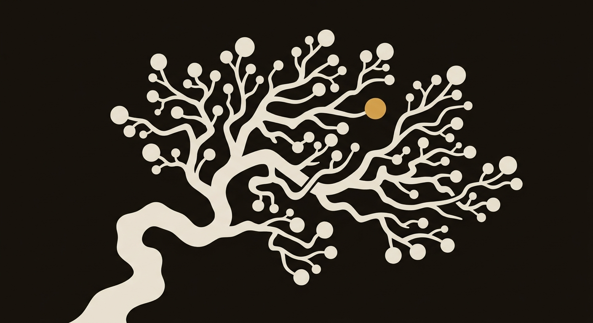
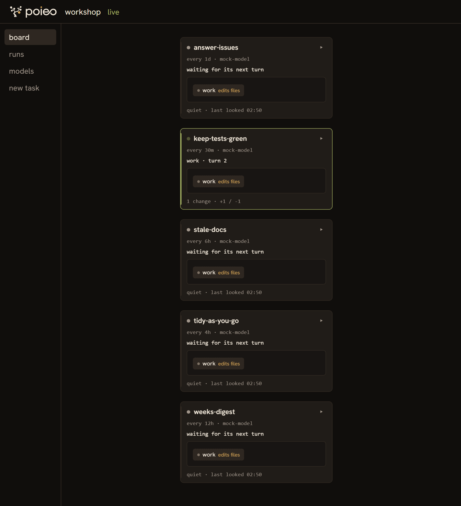
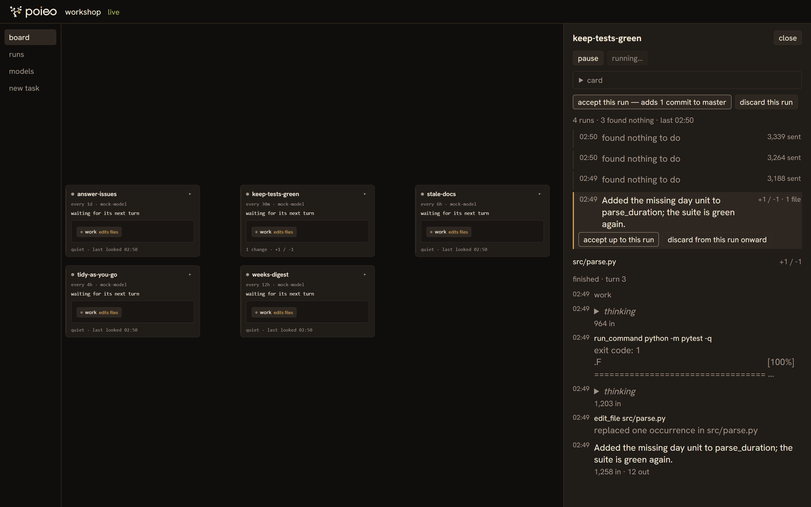

Write the task
A name, a folder, and a prompt. One plain file is enough.


An autonomous task board for the models you choose.
Write a task once. poieo keeps it running on the models you choose—on your machine, on your schedule—and brings every change back for your approval.
git clone https://github.com/luceinaltis/poieo && cd poieo &&
pip install .
Local or cloud, chosen per step. Your tasks stay on your machine; every change waits for you.
THE WORKING LOOP
A name, a folder, and a prompt. One plain file is enough.
Pick the models that fit. poieo keeps the task moving on its schedule.
Read the result and the diff. Accept it or discard it; you stay in control.


mkdir ~/board && cd ~/board
poieo init
It finds every model server on this machine and writes the result to
plain files. No model yet? --mock gives you a stand-in
that spends nothing.
# ~/board/tasks/keep-green.yaml
name: keep the tests green
folder: ~/code/thing
prompt: |
Run the tests. If one fails,
find out why and fix it.That is the whole file — everything else has a default.
poieo daemon
Every card in tasks/ now runs on its schedule, and the
board is at 127.0.0.1:8484. A task is a file: drop one in,
delete it out.
Tasks work in a private copy, never in your checkout. Each run leaves at most one change.
In the morning, read the diff and accept it — the only moment poieo writes to your branch — or discard it; nothing is lost for good.
No accounts, no server, no team features — and no plan to have them. Everything on this page ships today.